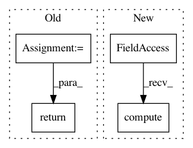

cb480110539e737e3e1537905e69245ceda7a3db,tests/pytorch/iris.py,IrisClassification,test_step,#IrisClassification#Any#Any#,76
Before Change
logits = self.forward(x)
loss = F.cross_entropy(logits, y)
_, y_hat = torch.max(logits, dim=1)
test_acc = accuracy(y_hat.cpu(), y.cpu())
self.log("test_loss", loss)
self.log("test_acc", test_acc)
return {"test_loss": loss, "test_acc": test_acc}
def test_epoch_end(self, outputs):
avg_loss = torch.stack([x["test_loss"] for x in outputs]).mean()
avg_test_acc = torch.stack([x["test_acc"] for x in outputs]).mean()
After Change
_, y_hat = torch.max(logits, dim=1)
self.test_acc(y_hat, y)
self.log("test_loss", loss)
self.log("test_acc", self.test_acc.compute())
if __name__ == "__main__":
In pattern: SUPERPATTERN
Frequency: 3
Non-data size: 4
Instances
Project Name: mlflow/mlflow
Commit Name: cb480110539e737e3e1537905e69245ceda7a3db
Time: 2021-02-03
Author: 51693147+ankan94@users.noreply.github.com
File Name: tests/pytorch/iris.py
Class Name: IrisClassification
Method Name: test_step
Project Name: williamFalcon/pytorch-lightning
Commit Name: 0e8ec93b28ecd86898b3668d48d346f510e95167
Time: 2021-01-06
Author: jspaezp@users.noreply.github.com
File Name: pl_examples/domain_templates/computer_vision_fine_tuning.py
Class Name: TransferLearningModel
Method Name: training_epoch_end
Project Name: williamFalcon/pytorch-lightning
Commit Name: 0e8ec93b28ecd86898b3668d48d346f510e95167
Time: 2021-01-06
Author: jspaezp@users.noreply.github.com
File Name: pl_examples/domain_templates/computer_vision_fine_tuning.py
Class Name: TransferLearningModel
Method Name: validation_epoch_end